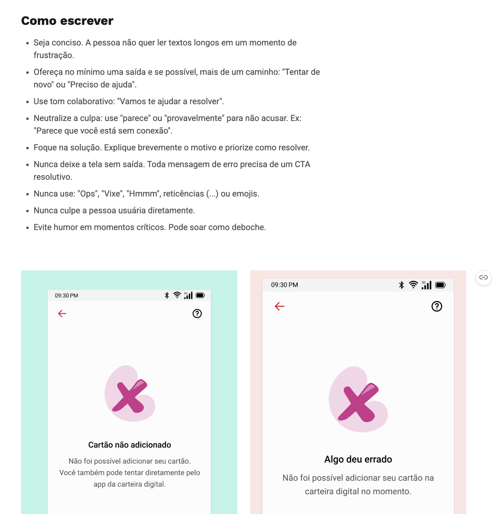
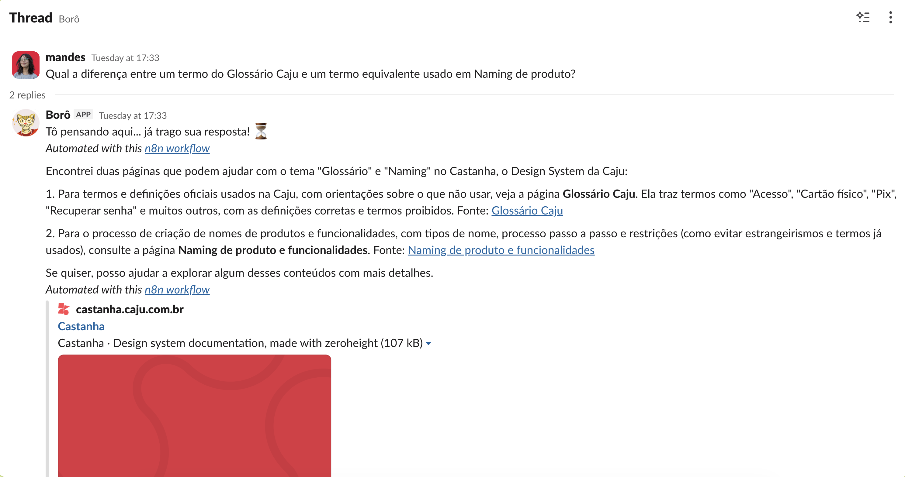
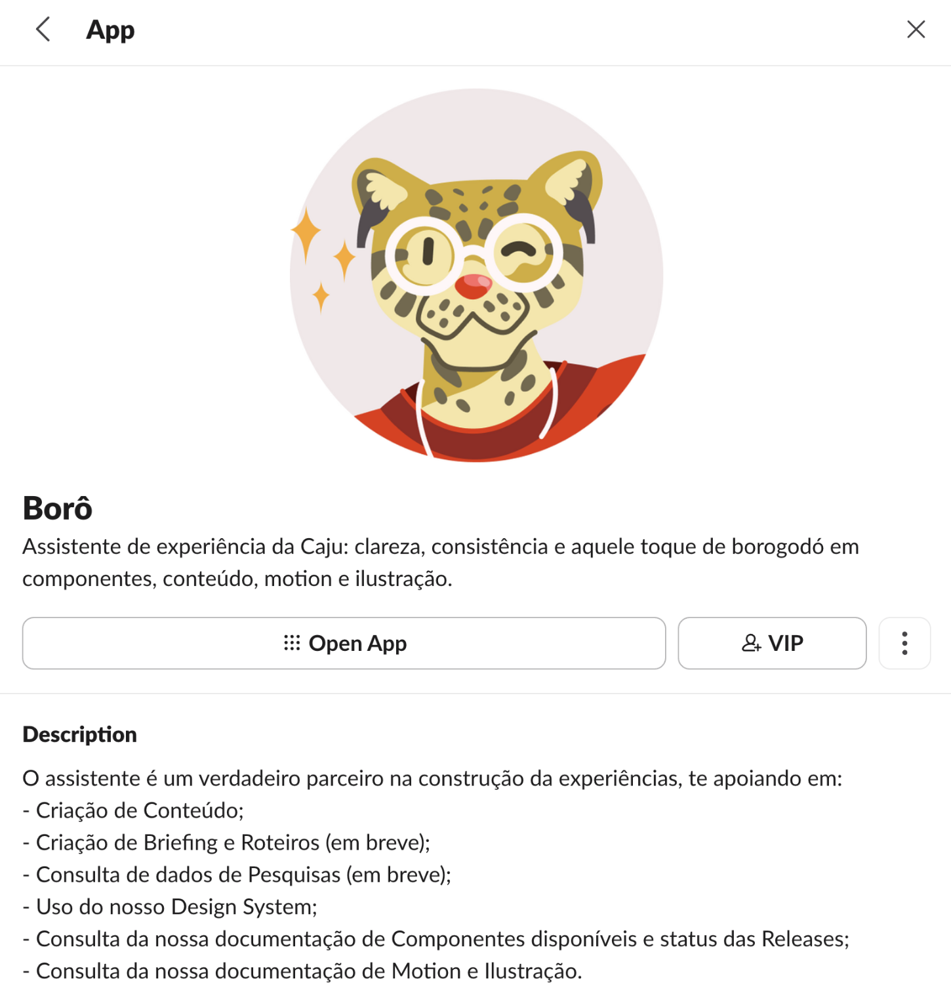
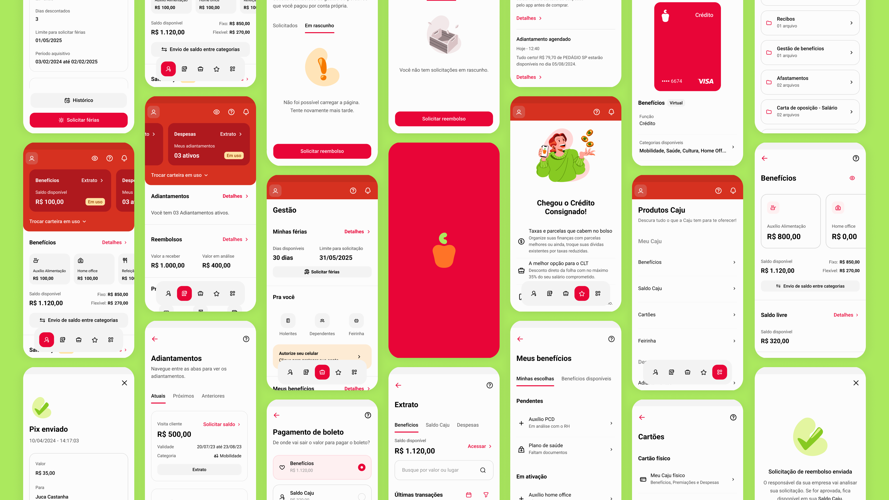

Case 01 · Content Ops · Caju
From content support to strategy
Building the foundations for scalable Content Design at Caju
When I joined Caju as its first Content Designer, content had no centralized ownership, shared standards, or scalable support model.
Over nearly two years, I built that foundation across content standards, designer enablement, structured support, and AI-assisted guidance.
An audit across eight touchpoints found inconsistent terminology, accessibility issues, fragmented writing patterns, and a voice that wasn't adapting to context. Research with 103 participants confirmed the problem:
45%
perceived communication as inconsistent across channels.
My role
As a Content Designer within Design Ops, I owned the Content Design strategy, governance model, and operating model from the ground up.
I partnered with Design System, Motion, Illustration, AI Operations, Brand & Marketing, and Product, reporting to the Design Ops Manager and sharing results quarterly with the Head of Design.
I led four connected workstreams:
Establish the system
Created a living content system covering terminology, voice and contextual tone, accessibility, channel standards, and component-level guidance.
Embed the practice
Designed and ran a six-month, hands-on training program for 40 Product Designers.
Scale support
Replaced ad hoc requests with office hours, request forms, and asynchronous triage.
Extend through AI
Partnered with the AI specialist on Borô, shaping the content side through QA, testing, and rewriting guidelines for machine interpretation. The AI specialist owned implementation.
Building the content system
The same B2B platform was called the “HR Portal,” “Sponsor App,” “Dashboard,” and “Admin Platform.” I consolidated these into Portal da Caju, establishing a single product name across the organization.
I then expanded the system into a living source of truth covering voice and tone, terminology, accessibility, channels, and component-level writing patterns.
Research also changed how we approached tone. While Caju's Brazilian character was strongly recognized by users, “ease” and “versatility” were less consistently perceived.
A blind read test showed that simpler language performed better than playful copy in high-stakes contexts such as security and billing.
I applied these standards directly to product experiences, redesigning copy alongside Product Designers. One of the resulting redesigns received an iF Design Award in 2026.

Moving content upstream
Documentation alone wouldn't change how designers worked, so I designed and ran a six-month, hands-on training program for 40 Product Designers.
The workshops focused on making content decisions before screens existed: mapping flows, defining and prioritizing information, establishing hierarchy and information architecture, and applying Caju's language and Design System patterns.
The training was mandatory and became part of onboarding through Zeroheight.
3.23 → 3.84
Average designer confidence in making content decisions.
4.0 / 5
Designers said the training helped them define information before designing screens.
4.2 / 5
Designers reported applying the approach in their day-to-day work.
The training and new support processes also reduced the proportion of support/revision requests from 76% to 42.9%, freeing capacity for more strategic work.
Scaling access with AI
The AI Operations team was piloting Borô, an AI agent that surfaced content guidance in Slack.
I joined as the Content Design stakeholder, contributing QA, test scenarios, iteration, and rewriting the guidelines so they could be interpreted consistently. The AI specialist owned implementation.
The pilot reached ~170 interactions/month, with 4.38/5 CSAT and 76% evaluation accuracy in its first evaluation round.
Review and consultation time decreased from 5 days to 2 days.


Impact
76% → 42.9%
Support/revision request ratio
3.23 → 3.84
Designer content-confidence score
5 → 2 days
Review and consultation time
~170/month
Borô interactions
4.38 / 5
Borô CSAT
iF Design Award 2026
Recognition for a product redesign shaped by the content work

What changed
Content Design evolved from a centralized service into a shared organizational capability.
Designers had the tools and confidence to make better content decisions themselves, structured support reduced dependency on one-to-one consultation, and Borô made specialist knowledge easier to access at scale.
When I left Caju, Borô's first-round accuracy was 76% against an 85% target, and governance had not yet expanded across every team producing customer-facing content.
Caso 01 · Content Ops · Caju
Construindo Content Ops do zero
Construindo as bases para um Content Design escalável na Caju
Quando entrei na Caju como primeira Content Designer da empresa, conteúdo não tinha uma área responsável, padrões compartilhados ou um modelo de suporte que pudesse escalar.
Ao longo de quase dois anos, construí essa base a partir de quatro frentes: padrões de conteúdo, capacitação de designers, suporte estruturado e orientação com apoio de IA.
Uma auditoria em oito pontos de contato identificou inconsistências de terminologia, problemas de acessibilidade, padrões de escrita fragmentados e uma voz que não se adaptava ao contexto. Uma pesquisa com 103 participantes confirmou o problema:
45%
percebiam a comunicação como inconsistente entre os canais.
Meu papel
Como Content Designer em Design Ops, fui responsável pela estratégia de Content Design, pelo modelo de governança e pelo modelo operacional da área desde o início.
Trabalhei em parceria com Design System, Motion, Ilustração, Operações de IA, Marca & Marketing e Produto, reportando ao Design Ops Manager e compartilhando os resultados trimestralmente com a Head of Design.
Liderei quatro frentes conectadas:
Estruturar o sistema
Criei um sistema de conteúdo vivo, com orientações sobre terminologia, voz e tom contextual, acessibilidade, padrões por canal e escrita em nível de componente.
Incorporar a prática
Criei e conduzi um programa prático de capacitação de seis meses para 40 Product Designers.
Escalar o suporte
Substituí solicitações pontuais por um modelo estruturado com office hours, formulários de solicitação e triagem assíncrona.
Expandir com IA
Trabalhei em parceria com a pessoa especialista em IA no Borô, contribuindo para a frente de conteúdo por meio de QA, testes e reescrita das orientações para facilitar a interpretação pela máquina. A implementação ficou sob responsabilidade da pessoa especialista em IA.
Construindo o sistema de conteúdo
A mesma plataforma B2B era chamada de “Portal do RH”, “App do Patrocinador”, “Dashboard” e “Plataforma Administrativa”. Consolidei esses nomes em Portal da Caju, estabelecendo um único nome para o produto em toda a organização.
A partir daí, ampliei o sistema para criar uma fonte de verdade viva, com orientações sobre voz e tom, terminologia, acessibilidade, canais e padrões de escrita em nível de componente.
A pesquisa também mudou a forma como trabalhávamos o tom de voz. Embora o caráter brasileiro da Caju fosse fortemente reconhecido pelos usuários, “facilidade” e “versatilidade” eram percebidas de forma menos consistente.
Um teste de leitura às cegas mostrou que uma linguagem mais simples funcionava melhor do que uma comunicação mais descontraída em contextos de maior risco, como segurança e cobrança.
Apliquei esses padrões diretamente nas experiências do produto, trabalhando na revisão dos textos em parceria com Product Designers. Um dos redesigns resultantes desse trabalho recebeu um iF Design Award em 2026.
Levando conteúdo para o início do processo
A documentação, sozinha, não mudaria a forma como os designers trabalhavam. Por isso, criei e conduzi um programa prático de capacitação de seis meses para 40 Product Designers.
Os workshops focavam em tomar decisões de conteúdo antes mesmo da criação das telas: mapear fluxos, definir e priorizar informações, estabelecer hierarquia e arquitetura da informação e aplicar os padrões de linguagem e do Design System da Caju.
A capacitação era obrigatória e passou a fazer parte do onboarding por meio do Zeroheight.
3,23 → 3,84
Confiança média dos designers para tomar decisões de conteúdo.
4,0 / 5
Disseram que a capacitação ajudou a definir as informações antes de desenhar as telas.
4,2 / 5
Relataram aplicar a abordagem no trabalho do dia a dia.
A capacitação e os novos processos de suporte também reduziram a proporção de solicitações de suporte/revisão de 76% para 42,9%, liberando capacidade para trabalhos mais estratégicos.
Escalando o acesso com IA
O time de Operações de IA estava conduzindo um piloto do Borô, um agente de IA que disponibilizava orientações de conteúdo diretamente no Slack.
Entrei no projeto como stakeholder de Content Design, contribuindo com QA, cenários de teste, iterações e reescrita das orientações para que pudessem ser interpretadas de forma consistente. A implementação ficou sob responsabilidade da pessoa especialista em IA.
O piloto chegou a aproximadamente 170 interações por mês, com CSAT de 4,38/5 e 76% de precisão na primeira rodada de avaliação.
O tempo de revisão e consulta caiu de 5 dias para 2 dias.
Impacto
76% → 42,9%
Proporção de solicitações de suporte/revisão
3,23 → 3,84
Índice de confiança dos designers em decisões de conteúdo
5 → 2 dias
Tempo de revisão e consulta
~170/mês
Interações com o Borô
4,38 / 5
CSAT do Borô
iF Design Award 2026
Reconhecimento por um redesign de produto influenciado pelo trabalho de conteúdo
O que mudou
Content Design deixou de ser um serviço centralizado e passou a funcionar como uma capacidade compartilhada pela organização.
Os designers passaram a ter ferramentas e mais confiança para tomar decisões de conteúdo por conta própria, o suporte estruturado reduziu a dependência de consultas individuais e o Borô tornou o conhecimento especializado mais acessível em escala.
Quando saí da Caju, a precisão do Borô na primeira rodada de avaliação era de 76%, diante de uma meta de 85%, e a governança ainda não havia sido expandida para todas as equipes que produziam conteúdo voltado aos clientes.